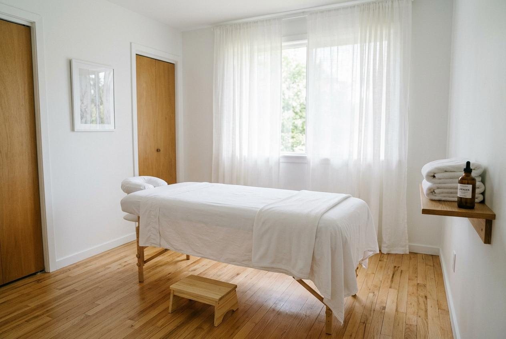

台北男士按摩推薦的資訊網路上很多，但價格與服務內容差異不小。對於初次接觸或想換店家的消費者來說，了解價格區間、服務項目與選擇標準，是找到適合服務的重要參考。本文整理實用的比較方向，幫助你做出合適的決定。
為什麼男士會選擇按摩服務？
現代上班族長時間坐在電腦前，工作壓力大導致肩頸背部緊繃的情況相當普遍。許多男士在下班後感到肌肉僵硬、腰部痠痛，卻沒有時間運動或休息。按摩服務成為釋放身體緊繃的選項之一，透過專業手法針對背部與肩部進行深層放鬆，讓身體從長時間的靜態壓力中恢復。
台北男士按摩推薦常見服務項目
目前市面上的按摩服務主要可分為以下幾類：
- 全身按摩調理：涵蓋背部、肩部、腿部等多個部位，適合整體疲勞感較重的人。
- 肩頸背部專注護理：針對久坐造成的上半身緊繃，時間通常較短，適合午休或下班後快速放鬆。
- 足部放鬆護理：透過足底反射區的按壓，協助下半身循環改善，適合長時間站立工作者。
- 精油舒緩按摩：使用植物精油搭配按摩手法，氣味與觸感的雙重體驗，適合希望放鬆心情的消費者。
台北男士按摩服務流程怎麼安排？
一般來說，預約按摩服務可以依照以下步驟進行：
- 選擇店家並查詢服務項目：先瀏覽官網或社群頁面，了解提供的按摩種類與價位。
- 聯繫預約：透過電話或線上系統預約，告知希望的日期與時段。
- 確認服務內容與價格：預約時再次確認項目內容與費用，避免現場產生誤會。
- 到店或等待到府服務：依照選擇的模式，前往門市或在家等待按摩師到達。
- 服務後給予回饋：體驗後可留下評價，幫助其他消費者參考，也讓店家知道改善方向。
台北男士按摩價格通常怎麼看？
台北男士按摩的價格會根據服務時間、項目種類與店家定位有所不同。一般來說，60分鐘的基礎按摩價位約在1,500元至3,000元之間，120分鐘的深層護理則可能落在3,000元以上。到府服務通常會額外收取車馬費，約300元至800元不等。
在比較價格時，建議不要只看數字高低，更要留意價格區間是否明確標示、有無隱藏費用。以下表格提供幾個評估店家時可以參考的方向：
| 比較項目 | 說明 |
|---|---|
| 服務項目完整性 | 店家是否提供多種按摩選擇，能依照個人需求調整 |
| 價格區間明確度 | 費用是否在官網或預約時清楚告知 |
| 預約方式便利性 | 是否提供電話、線上或社群軟體多種預約管道 |
| 顧客評價參考度 | 網路上的真實回饋數量與內容是否具參考價值 |

台北男士按摩推薦怎麼選？
選擇按摩店家時，建議從以下幾個角度評估：
- 環境衛生：按摩空間是否乾淨整潔，用品是否有定期更換。
- 師資專業度：按摩師是否具備相關證照或豐富經驗，能否針對個人狀況調整手法。
- 溝通順暢度：預約與服務過程中，店家是否能耐心回應問題與需求。
- 評價真實性：網路評價是否有具體描述，而非僅有籠統的好評。
選擇符合自己需求與預算的店家，比追求低價更重要。
到府按摩與門市按摩有什麼差別？
到府按摩與門市按摩各有其適用情境。到府按摩的優點是節省交通時間，在自己的空間中放鬆，適合下班後不想外出的人。缺點是需要準備適當的空間，且通常需額外支付車馬費。
門市按摩則有專業的設備與環境，按摩師可以即時調整手法與力度，且現場氛圍有助於放鬆。缺點是需要預留交通時間，且熱門時段可能較難預約。
兩種方式各有優缺，取決於個人的生活型態與偏好。
預約前需要注意哪些事項？
預約按摩服務前，建議先確認以下幾點：
- 身體狀況是否適合：如有皮膚發炎、骨折或重大疾病，應先諮詢醫師。
- 服務內容與預期是否一致：預約前詳閱項目說明，確認時間長度與包含內容。
- 取消與更改政策：了解店家的取消規定，避免臨時無法前往產生糾紛。
- 個人物品保管：無論是到府或門市，貴重物品應妥善收好。
- 放鬆心態：帶著輕鬆的心情前往，不要過度緊張，才能獲得較好的體驗。
選擇按摩服務的重點整理
選擇適合的按摩服務需要綜合考量價格、項目、環境與評價等多項因素。建議先釐清自己的需求與預算，再依照本文提供的比較方向進行篩選。如果你在尋找台北男士按摩推薦的選項，可以將金手指按摩列入參考名單，透過實際體驗找到符合自己期待的服務。
常見問題
台北男士按摩推薦的價位大概是多少？
一般60分鐘的基礎按摩約在1,500元至3,000元之間，具體價格會因服務項目與店家定位而有所不同。
如何判斷按摩店家的評價是否可信？
建議查看有具體內容的評價，例如描述環境、師傅手法、服務態度等細節，而非僅看星級分數。
首次預約按摩需要注意什麼？
首次預約建議先選擇基礎項目，時間以60至90分鐘為宜，並在預約時確認價格與服務內容。
到府按摩與門市按摩哪個比較好？
兩者各有特色，到府按摩適合想節省交通時間的人，門市按摩則有較完整的設備與氛圍，可依個人需求選擇。
選擇按摩店家時應該優先看重哪一點？
建議優先考量環境衛生與師資專業度，其次是價格合理性與溝通順暢度，綜合評估後再決定。